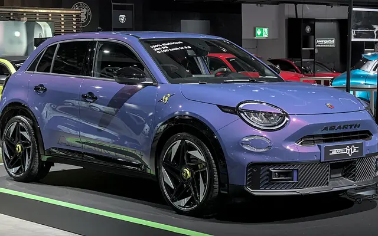

Par Motor › Precios por modelo › Abarth 600e
Precio de segunda mano · noviembre de 2026¿Cuánto vale un Abarth 600e de segunda mano?

Precio justo estimado de un Abarth 600e usado en España, año por año, con los kilómetros normales para su edad y en buen estado: de 29.100 € a 41.800 €. Para tasar el tuyo con sus kilómetros reales y su estado, usa el tasador gratis.
Precios del Abarth 600e por año
600e (2024–hoy)
Precio de nuevo: 600e 240 CV, 43.000 € · Scorpionissima 280 CV, 48.000 €
| Año | Km normales | 600e 240 CV · Eléctrico | Scorpionissima 280 CV · Eléctrico |
|---|---|---|---|
| 2026 | 5.000 km | 37.400 € | 41.800 € |
| 2025 | 20.000 km | 31.500 € | 35.100 € |
| 2024 | 35.000 km | 29.100 € | 32.400 € |
Kilómetros normales: 15.000 al año en gasolina, híbridos y eléctricos, y 20.000 en diésel, con un máximo de 100.000 km (por encima no tasamos: el precio depende demasiado del historial de cada coche). Cifras redondeadas a 100 €.
Preguntas frecuentes
¿Cuánto vale un Abarth 600e de segunda mano?
Según el año, la versión y los kilómetros, un Abarth 600e usado vale hoy de 29.100 € a 41.800 € en España. El más barato de nuestra tabla es un 600e de 2024 (29.100 €) y el más caro un Scorpionissima de 2026 (41.800 €). Son precios justos estimados entre particulares y profesionales, con los kilómetros normales para su edad y en buen estado.
¿Qué motorizaciones tiene el Abarth 600e?
En nuestra base de datos hay versiones eléctrico, en 1 generación: 600e.
¿Cómo sé si me piden demasiado por un Abarth 600e?
Abre el tasador de Par Motor, elige el Abarth 600e, el año y los kilómetros reales, y escribe lo que te piden. Te diremos si está por debajo del precio justo (chollo) o por encima (caro). Es gratis y no pide registro ni matrícula.
Otros Abarth
Compara su coste real
El precio de compra es solo una parte. Mira cuánto te costaría al mes con combustible, seguro, neumáticos, mantenimiento y lo que pierde de valor.
Abrir el comparador →